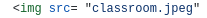

O html permite especificar o tipo de marcador de uma lista ordenada usando a propriedade "type", que pode ser "1"(números), "a"(letras minúsculas), "A"(letras maiúsculas) ou "I"(números romanos).
Em resumo, as tags "Ul" e "Ol" são usadas para criar listas não ordenadas e ordenadas em html, respectivamente, e as propriedades "type" podem ser usadas para especificar o tipo de marcador da lista ordenada.
para deixar em negrito usamos a tag:
E para deixar em itálico usamos a tag:
O cabeçalho em html, indicado pela tag header, é utilizado para apresentar o cabeçalho de uma seção ou de uma página da web. Ele geralmente contém elementos como logo, título, menu de navegação, informações de contato, entre outros.
O cabeçalho é uma parte importante do design e da arquitetura de informações de uma página, pois ajuda os usuários a entenderem o conteúdo e a navegar pelo site de forma mais fácil e intuitiva.
Navegação entre páginas html se refere à capacidade de mover-se de uma página para outra dentro de um site ou aplicação web. Isso pode ser feito por meio de links, botões ou menus que levam o usuário para outra página relacionada ao conteúdo que ele está visualizando.
A navegação é fundamental para fornecer uma experiência de usuário intuitiva.
Para colocar imagens no html é preciso usar a tag img e o link da imagem , e essa tag permite especificar o URL da imagem a ser exibida, bem como outraas propriedades opcionais, como largura, altura, descrição da imagem, entre outras.
Para colocarmos uma imagem é preciso usar a tag desta forma: 
sendo: Src o caminho; o nome da imagem o endereço; A propriedade "Src" especificada na URL da imagem a er exibida e a propriedade "ALT" especifica uma descrição da imagem para ser exibida em caso de exibição da imagem para leitores de tela. Também podemos mudar a largura, altura,os pixels, porcentagem e fração da imagem usando as tags
O posicionamento de elementos em html é questão importante para a organização e layout de uma página Web. Através do uso de técnicas de posicionamento, é possível definir a disposição dos elementos.
Uma das técnicas mais comuns de posicionamento é o uso do CSS, que permite definir as propriedades de posicionamento dos elementos. Com o CSS é possível definir o posicionamento absoluto de um elemento em relação a um ponto específico na tela, ou aindadefinir o posicionamento relativo em relação a outros elementos na página. Qual é a diferença entre o posicionamento absoluto e o relativo de elementos em Html?
Resposta: O posicionamento absoluto define as coordenadas exatas de um elemento em relação à janela do navegador, enquanto o posicionamento relativo define o posicionamento em relação ao elemento pai.O posicionamento de elementos html se refere à forma comos os elementos são dispostos na página web. Existem diversos métodos para realizar o posicionamento, desde a utilização de propriedades de css até a organização dos elementos em tabelas.
O objetivo é sempre alcançar uma estrutura visualmente agradável e funcional para o usuário. É importante lembrar que o posicionamento dos elementos pode influenciar no desempenho da página e na experiência do usuário, por isso é fundamental escolher o método mais adequado para cada caso.
è importante considerar esses fatores ao criar páginas html para garantir que os elementos sejam posicionados de maneira adequada e visível em diferentes dispositivos. Como garantir que os elementos em uma página html sejam posicionados corretamente em diferentes dispositivos?
exemplo de media query no css media(max-width:600px) { p{ font-size:40px; } }
A tag section em html é utilizada para agrupar conteúdos relacionados em uma página. Ela é usada para dividir o conteúdo de uma página em seções lógicas e pode ser alinhada em outras tags, como article, main, div,e outras.
Ao utilizar a tag section, o conteúdo dentro dela é considerado como uma seção distinta do restante da página permintindo uma melhor organização e estruturação do conteúdo.
título 1
título 2
Bordas em html são elementos visuais que podem ser adicionados a diferentes tipos de elementos html, como tabelas, imagens, caixas de texto e divs. Elas são usadas para destacar e separar visualmente diferentes seções do conteúdo da página, tornando-a mais organizada e fácil de ler.
Podem ser definidas por meio de atributos de estilo, como "border", "border-width", "border-style" e "border-color", que permitem especificar a largura, estilo e cor da borda. É importante lembrar que o uso excessivo de bordas pode tornar a página confusa e difícil de navegar, por isso é importante encontrar um equilíbrio adequado na sua utilização.
exemplo de utilização de borda css p{ border:2px solid blue, }A utilização de pseudo-classes css pode ser uma forma eficaz de tornar a expeiência do usuário em uma página web mais agradável e interativa. As pseudo-classes permitem que os desenvolvedores criem estilos dinâmicos para elementos html com base em interações específicas, como clicar em um link ou passar o cursor do mouse sobre o botão.
Dessa forma, elas podem melhorar a usabilidade do site e aumentar a interação do usuário com o conteúdo. É importante lembrar que a utilização excessiva de pseudo-classes pode tornar a página web pesada e lenta para carregar, especialmente em dispositivos móveis ou com conexões lentas. É importante ter equilíbrio para que elas sejam úteis e não afetem negativamente o desempenho da página Elemento<- P:hover { color:green; } Hover=flutuar